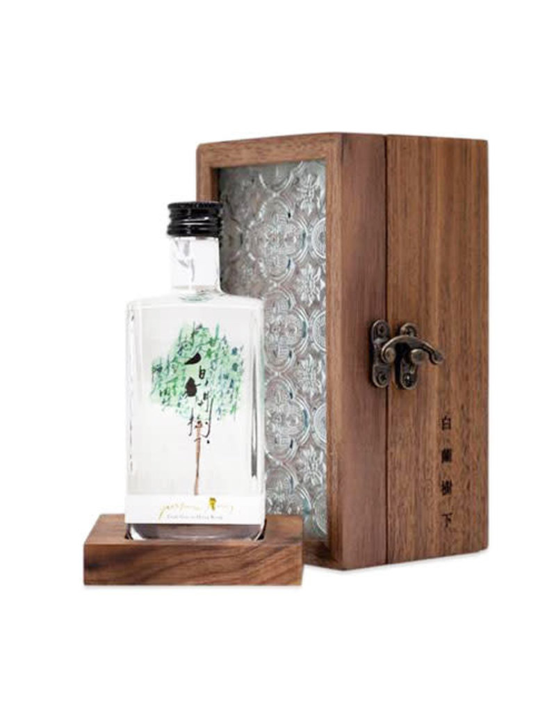

WELCOME TO NATURE PERFUME
TREE PERFUME.
TREE PERFUME
- Which perfume can you get from the wood of a tree?
Wood fragrances may include sandalwood, cedar, oak, pine, cypress and oud (among others), and also include for classification's sake patchouli and vetiver. Some woods fragrances smell like the outdoors while others smell like an antique treasure chest, and still more use wood as background support.
|

|